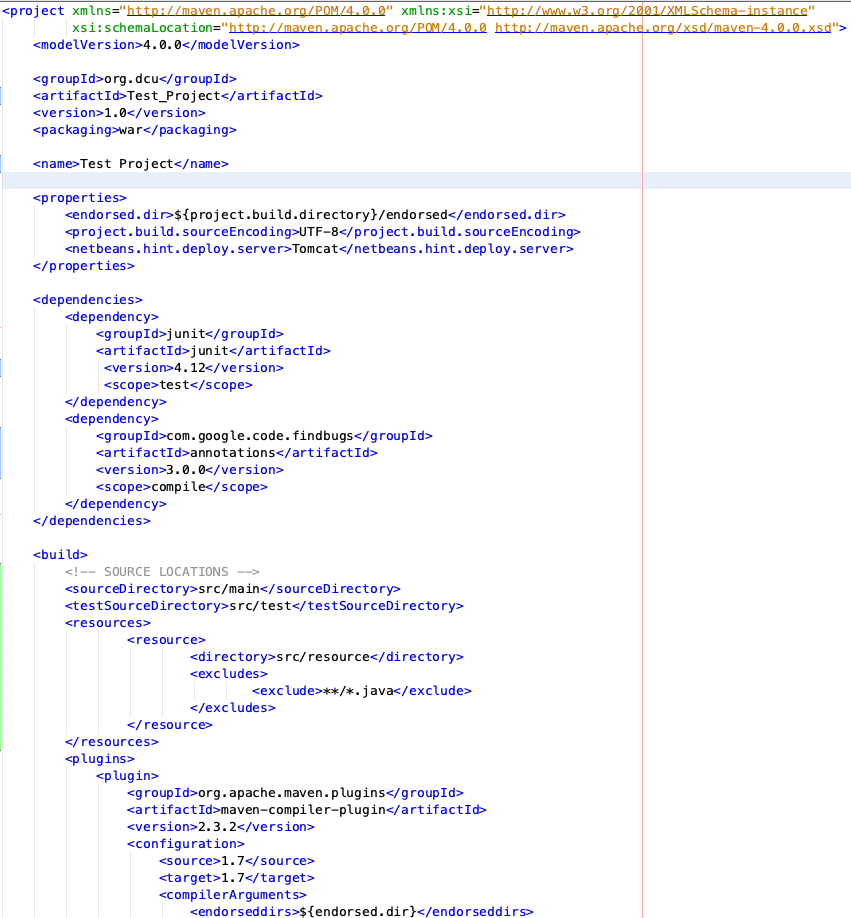
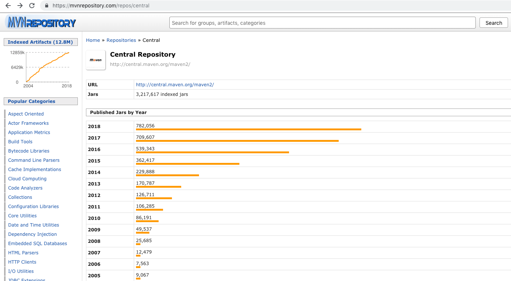

Προγραμματισμός ΙΙ: Apache Maven


Προγραμματισμός ΙΙ
Apache Maven
Maven
- Το Apache Maven είναι ένα εργαλείο αυτοματοποίησης του χτισίματος (build automation tool)
- Το χτίσιμο μιας εφαρμογής λογισμικού συνήθως συνίσταται από διάφορες εργασίες όπως η συλλογή εξαρτήσεων, η μεταγλώττιση του πηγαίου κώδικα σε δυαδικό, η εκτέλεση tests, κλπ.
- Το Maven αυτοματοποιεί αυτές τις διαδικασίες, ελαχιστοποιώντας το ρίσκο ανθρώπινου λάθους και διαχωρίζοντας τις διεργασίες της μεταγλώττισης και της ομαδοποίησης κώδικα από την διεργασία της συγγραφής του.
- Τα παραπάνω συμβαίνουν μέσω ενός XML αρχείου (pom.xml) στο οποίο περιγράφεται το έργο το οποίο υλοποιείται, τις εξαρτήσεις του, την σειρά χτισίματος, κλπ.
Γιατί να το χρησιμοποιήσω
- Εύκολη οργάνωση ενός έργου, η οποία ακολουθεί καλές πρακτικές
- Διαχείρηση εξαρτήσεων
- Κεντρικό σύστημα αποθετηρίων
- Διευκολύνει την συνεργασία μεταξύ των μελών των ομάδων ανάπτυξης
- Είναι ενσωματωμένο στα περισσότερα δημοφιλή IDEs
Παράδειγμα pom.xml

Maven Central Repository


This work is licensed under a Creative Commons Attribution-NonCommercial-ShareAlike 4.0 International License.